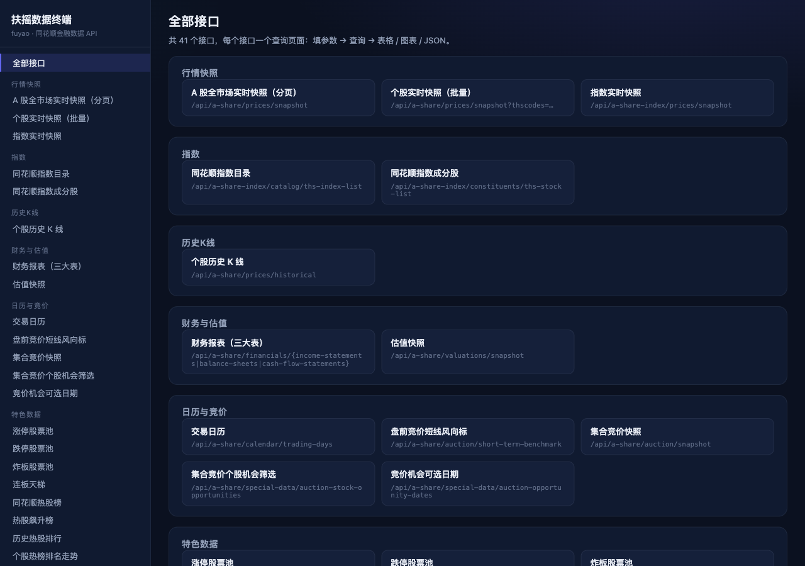
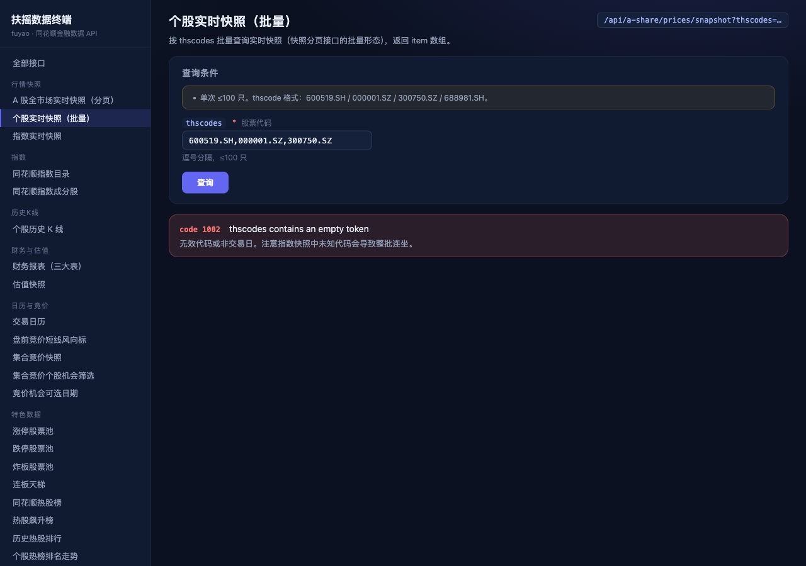

使用指南（无需编程）¶
这是什么？¶
一个查股票数据的网页工具。你不需要写任何代码——像用任何网站一样：左边选功能 → 填几个框 → 点「查询」→ 看表格或图表。
它能查 41 种数据，覆盖日常看盘常用场景：
| 你想知道… | 用这个功能 |
|---|---|
| 某几只股票现在什么价 | 行情快照 → 个股实时快照（批量） |
| 某只股票的历史走势 | 历史K线 → 个股历史 K 线 |
| 今天哪些股票涨停了 | 特色数据 → 涨停股票池 |
| 现在市场在炒什么 | 特色数据 → 同花顺热股榜 / 热股飙升榜 |
| 某只基金表现如何 | 基金 → 基金区间收益与排名 / 基金最大回撤 |
| 今天是不是交易日 | 日历与竞价 → 交易日历 |
界面长什么样？¶
首页 = 功能目录。左边是按类别分组的全部 41 个功能，中间是同样的功能卡片，点任何一个进入查询页：

查询页 = 填表 → 点查询。表单已经帮你填好了示例（比如默认的股票代码），不改也行，直接点「查询」：

结果有三个页签可以切换：
- 表格 —— 整齐的数据列表（最常用）
- 图表 —— K 线、条形图等（部分功能有）
- JSON —— 原始数据（给技术同学核对用，可以无视）
有图表的功能长这样（贵州茅台日 K 线）：
第一次使用：三步上手¶
- 拿到钥匙：在 https://fuyao.aicubes.cn 注册并申请一个 API Key（一串字符，相当于你的通行证，按量计费/有免费额度以官方为准）
- 启动工具：需要会电脑的同事/朋友帮忙执行一次（见下方「启动」），之后就是一个普通网页
- 开始查：按上面的「你想知道…」表格找到功能，点查询
启动（给帮忙执行的人）¶
cd backend && .venv/bin/python app.py # 启动后浏览器打开 http://127.0.0.1:5010
前提：backend/.env 文件里已填好 FUYAO_API_KEY=你的key（只需配一次）。详细步骤见部署运维。
术语表¶
| 术语 | 白话解释 |
|---|---|
| thscodes / 股票代码 | 股票的"身份证号"，如 600519.SH 是贵州茅台（.SH=上海，.SZ=深圳） |
| 快照 | 某一时刻的全市场报价"照片" |
| 批量 | 一次同时查多只（有限制，一般 ≤100 只，页面会提示） |
| K 线 | 蜡烛图，一根蜡烛表示一天的开盘价/收盘价/最高/最低 |
| 净值 | 基金每份值多少钱 |
| 回撤 | 从高点最多跌了多少（衡量基金"惨"的程度） |
| 龙虎榜 | 交易所公布的异动股票买卖席位明细 |
| 炸板 | 涨停后又被打开（封住涨停叫"封板"） |
常见问题¶
查询报红色错误提示怎么办？
看提示里的文字，最常见的三种：
no_key—— 还没配 API Key，找帮忙的人配置backend/.env4001 请求过于频繁—— 点太快了，等几秒再点1002 无效代码或非交易日—— 股票代码写错了，或者查询的那天股市不开门（周末/节假日）
为什么日期总是"差一天"？
不是 bug——数据源的日期是按北京时间记录的，系统内部已自动处理；如果自己写程序解析原始 JSON 才需要注意（见契约手册）。
数据准吗？
数据来自同花顺官方 API（扶摇），与同花顺 App 同源。
能查美股/港股吗？
目前仅覆盖 A 股、场内外基金、同花顺指数。